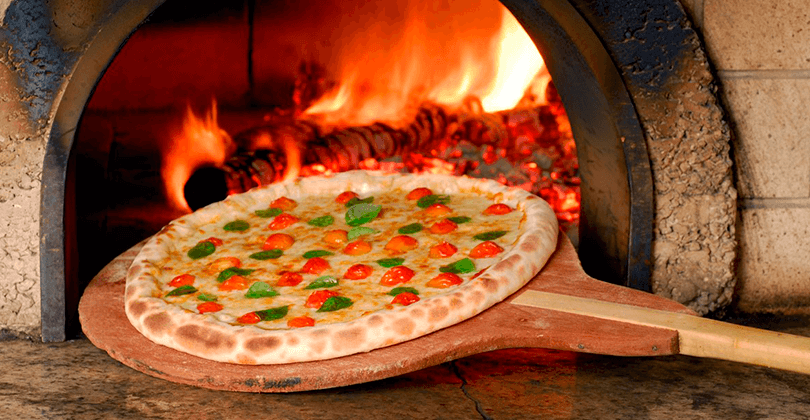

A Nossa Jornada
A Pizza Riba não nasceu apenas de um plano de negócios; ela nasceu de uma lembrança. Sabe aquele perfume de manjericão fresco e massa assando que tomava conta da casa da nossa avó aos domingos? Foi exatamente esse sentimento que decidimos transformar em realidade. O que começou em uma pequena cozinha familiar, com um forno modesto e muita experimentação, cresceu com um propósito claro: resgatar a verdadeira essência da pizza artesanal italiana e trazê-la para o coração da nossa comunidade. Para nós, uma pizza não é apenas uma refeição; é um convite para celebrar a vida ao redor da mesa.

O Segredo está nos Detalhes
Muitos nos perguntam qual é o segredo do nosso sabor. A resposta é simples, mas exige paciência: respeito ao tempo e à qualidade. * Nossa Massa: Preparada diariamente com um blend de farinhas selecionadas, nossa massa passa por um processo de longa fermentação. O resultado? Uma pizza leve, crocante por fora e aerada por dentro, que não te deixa com aquela sensação de peso.
- O Molho de Tomate: Esqueça os produtos industrializados. Nosso molho é feito exclusivamente com tomates pelados maturados ao sol, temperados apenas com sal marinho, azeite extra virgem e manjericão fresco.
- Ingredientes Locais: Acreditamos no poder do pequeno produtor. Por isso, priorizamos ingredientes frescos da nossa região, garantindo que cada fatia tenha o máximo de sabor e qualidade.
Mais que uma Pizzaria, uma Família
Com o passar dos anos, a Pizza Riba cresceu. Saímos daquela cozinha apertada e hoje temos o prazer de receber centenas de amigos (clientes que viraram família) todas as semanas. No entanto, o compromisso continua exatamente o mesmo do primeiro dia: o respeito pelas receitas tradicionais e o carinho em cada etapa do preparo. Não importa se você vem para um jantar romântico, uma comemoração barulhenta com os amigos ou para buscar sua pizza favorita e comer no sofá de casa; nosso objetivo é garantir que aquela primeira mordida te faça sorrir.
Onde Estamos e Onde Queremos Chegar
Olhamos para o futuro com a mesma empolgação de quem acabou de abrir as portas. Queremos continuar inovando em sabores, mas sem nunca perder a nossa base clássica. Afinal, a tradição é o alicerce, mas a criatividade é o tempero que nos move.